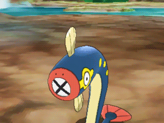
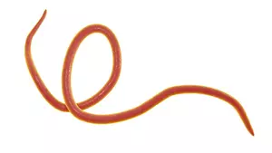
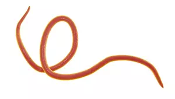

As Lombrigas podem ser encontradas em países com deficiência em saneamento básico e com climas mais
tropicais. É transmitida através da ingestão de verduras e água contaminados com os ovos do parasita.
As lombrigas possuem um sistema digestório completo, ou seja, boca e ânus. Se alimentam através do produto
da digestão do hospedeiro.
Esses animais não possuem um grande sistema de defesa, porém são muito resistentes a diferentes estímulos humanos, e a ácidos que estão presentes no sistema digestório. Vale ressaltar que as lombrigas não tem um sistema circulatório presente, ou seja, o transporte de substância é feito através da difusão. Têm um sistema corpóreo, consequentemente não tem uma estrutura específica para a respiração. Já o sistema nervoso é presente, que se centraliza na região da faringe. Possuem dois cordões nervosos ligados, que percorrem a região dorsal e ventral do corpo.
A regulação de água desse nematelminto não é muito complexa, o sistema excretor elimina essencialmente substâncias nitrogenadas, secretando também íons dissolvidos no excesso de água por meio de células especializadas denominadas renetes. A locomoção desses animais se baseia em uma musculatura longitudinais e por essas fazem movimentos ondulatórios para se locomoverem.
Abordando sobre a questão dos hospedeiros, as lombrigas não possuem um hospedeiro intermediário, apenas um hospedeiro definitivo, que é o ser humano. Para tratar a doença alguns métodos podem ser tomados, como um investimento maior em saneamento básico para evitar a propagação da doença, e para curar essa doença, podem ser ministrados albendazol, mebendazol ou ivermectina.
A reprodução das lombrigas ocorre de forma sexuada no interior do corpo do hospedeiro. Ocorre a cópula para a reprodução desses vermes que terão seus ovos liberados pelo indivíduo contaminado através das fezes. Todo esse processo demora em torno de 2 a 3 meses e o verme na fase reprodutiva pode viver por mais de um ano.
Dada a rara incidência de pokémons parasitas, o Pokemón Eelektrik, da mesma forma que o esquistossomo, é o mais próximo de uma lombriga:
Esses animais não possuem um grande sistema de defesa, porém são muito resistentes a diferentes estímulos humanos, e a ácidos que estão presentes no sistema digestório. Vale ressaltar que as lombrigas não tem um sistema circulatório presente, ou seja, o transporte de substância é feito através da difusão. Têm um sistema corpóreo, consequentemente não tem uma estrutura específica para a respiração. Já o sistema nervoso é presente, que se centraliza na região da faringe. Possuem dois cordões nervosos ligados, que percorrem a região dorsal e ventral do corpo.
A regulação de água desse nematelminto não é muito complexa, o sistema excretor elimina essencialmente substâncias nitrogenadas, secretando também íons dissolvidos no excesso de água por meio de células especializadas denominadas renetes. A locomoção desses animais se baseia em uma musculatura longitudinais e por essas fazem movimentos ondulatórios para se locomoverem.
Abordando sobre a questão dos hospedeiros, as lombrigas não possuem um hospedeiro intermediário, apenas um hospedeiro definitivo, que é o ser humano. Para tratar a doença alguns métodos podem ser tomados, como um investimento maior em saneamento básico para evitar a propagação da doença, e para curar essa doença, podem ser ministrados albendazol, mebendazol ou ivermectina.
A reprodução das lombrigas ocorre de forma sexuada no interior do corpo do hospedeiro. Ocorre a cópula para a reprodução desses vermes que terão seus ovos liberados pelo indivíduo contaminado através das fezes. Todo esse processo demora em torno de 2 a 3 meses e o verme na fase reprodutiva pode viver por mais de um ano.
Dada a rara incidência de pokémons parasitas, o Pokemón Eelektrik, da mesma forma que o esquistossomo, é o mais próximo de uma lombriga:


 
